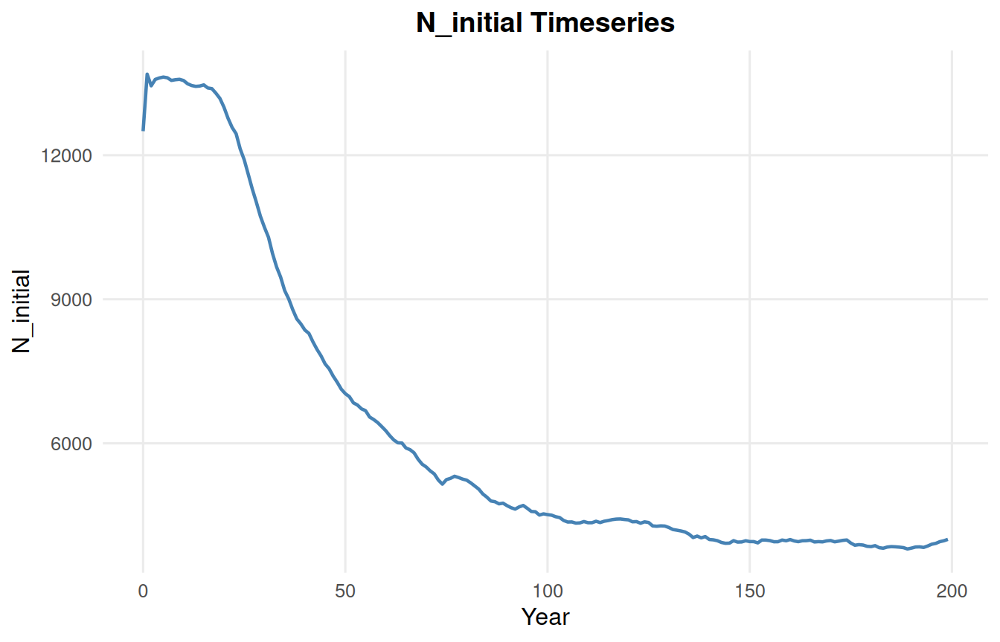

mycv <- ClassVars()
mypv <- PatchVars(class_vars = mycv) # an object, not a path
mypopv <- PopVars(xyfilename = mypv)
myrv <- RunVars(Popvars = mypopv)
run_dir <- launch_cdmetapop(myrv, pythonFilepath = "python",
CDMetaPOPFilepath = "CDMetaPOP.py")Building CDMetaPOP input files with the R wrapper
Create ClassVars, PatchVars, PopVars and RunVars objects, and launch a simulation
CDMetaPOP input files consist of a series of connected csv files: a RunVars.csv naming one or more PopVars.csv files, each naming a PatchVars.csv, which in turn names a ClassVars.csv, plus cost-distance matrices, gene frequency files, and other inputs.
This tutorial is meant to help the user create and assemble these files and handle the directories and relative paths of the different input files under the hood.
cdmetapopR represents these file types as R objects based on unique classes:
| Object | File | Each row is |
|---|---|---|
ClassVars() |
ClassVars.csv |
an age class |
PatchVars() |
PatchVars.csv |
a patch |
PopVars() |
PopVars.csv |
a batch |
RunVars() |
RunVars.csv |
a run |
Default values for each input class match values in CDMetaPOP’s own example files, each column can be modified by the user, after which the wrapper will validate everything assigned to an input object, and can hold another object wherever the inputs call for another object.
launch_cdmetapop() will write the entire input file directory for you, and you never have to name a csv file or manage subdirectories. If your CDMetaPOP input files already exist, you can read them in as R objects using read_cdmetapop() or using the path argument in each of the above functions.
Here is an example that will create all necessary inputs:
Even simpler, you can run the default example simulation by just calling RunVars() in the launch_cdmetapop() function.
run_dir <- launch_cdmetapop(RunVars(), pythonFilepath = "python",
CDMetaPOPFilepath = "CDMetaPOP.py")write_cdmetapop() can be used to write a single object to file, read_cdmetapop() or the path = argument can be used to read an existing file in as an R object.
This vignette builds a complete, valid input set from scratch. Everything except the launch itself runs as shown.
ClassVars
ClassVars.csv holds the age-class parameters: size at age, mortality, maturation, migration probability, etc. A default call reproduces CDMetaPOP’s ClassVars_AS1.csv, which has six age classes.
mycv <- ClassVars()
mycv$ages[1] 0 1 2 3 4 5Columns are read and written as vectors with one value per age class. Printing the object shows the table; as.data.frame() gives you an ordinary data frame to inspect or subset.
as.data.frame(mycv)[, c("Age class", "Body Size Mean", "Age Mortality Out")] Age class Body Size Mean Age Mortality Out
1 0 31 N
2 1 53 N
3 2 92 N
4 3 123 N
5 4 147 N
6 5 184 NDefault columns can be modified when the function is called, or already created objects can be modified just like a data frame. Input values are validated immediately, so incorrect input values will be flagged immediately:
mycv$age_mortality_out <- c(0.6, 0.4, 0.2, 0.1, 0.1, 0.1)
mycv$maturation <- c(0, 0, 0.5, 1, 1, 1)
mycv$age_mortality_out[1] "0.6" "0.4" "0.2" "0.1" "0.1" "0.1"# Alternatively, edit the columns at creation
mycv <- ClassVars(age_mortality_out = c(0.6, 0.4, 0.2, 0.1, 0.1, 0.1),
maturation = c(0, 0, 0.5, 1, 1, 1))add_rows() adds age classes, copying the current last row so you only edit what differs:
add_rows(mycv)
mycv$ages[1] 0 1 2 3 4 5 6mycv$maturation[1] "0" "0" "0.5" "1" "1" "1" "1" PatchVars
PatchVars.csv contains one row for each patch and includes spatial coordinates, carrying capacity, initial population size, mortality, migration, and growth parameters. The default is CDMetaPOP’s seven-patch PatchVarsS1.csv.
The class_vars column is where a PatchVars file would normally name a ClassVars.csv. With the wrapper, you can provide either the R object or the relative filepath:
mypv <- PatchVars(class_vars = mycv, genes_initialize = "random")
mypv$patch_id[1] 1 2 3 4 5 6 7genes_initialize = "random" draws random starting genotypes rather than reading an allele-frequency file.
Edit columns one value per patch, and add patches with add_rows():
mypv$k <- c(300, 300, 500, 500, 200, 200, 200)
mypv$n0 <- 100
# Alternatively,
mypv <- PatchVars(k = c(300, 300, 500, 500, 200, 200, 200),
n0 = 100)
add_rows(mypv)
mypv$patch_id[1] 1 2 3 4 5 6 7 8mypv$k[1] "300" "300" "500" "500" "200" "200" "200" "200"Changing parameter values over time and by sex
CDMetaPOP packs multiple values into one cell using delimiters, be careful to get the formatting correct.
| Delimiter | Meaning | Example |
|---|---|---|
| | | changes over time, at the years set by RunVars$cdclimgentime |
"0|0.2|0.5" |
~ |
differs by sex, in the order FXX, MXY, MYY, FYY | "0.5~0.5" |
; |
multiple species, or multiple files for one field | "popvars/speciesA.csv;popvars/speciesB.csv" |
A delimited value is a single string, not a vector.
# One patch's mortality changing over time: 0, then 0.2, then 0.5
mypv$mortality_out <- "0|0.2|0.5"
# Eight patches, each with different mortality values over time
mypv$mortality_out <- c("0|0.2|0.2","0|0.2|0.3","0|0.2|0.4","0|0.2|0.5","0|0.2|0.6","0|0.2|0.7","0|0.2|0.8","0|0.2|0.8")
# Eight patches, each with its own constant mortality
mypv$mortality_out <- c(0, 0.1, 0.1, 0.2, 0.2, 0.2, 0.3, 0.3)The first assigns the same three-stage schedule to every patch. The second gives each patch different values over time, and the third gives one value for each patch. Writing c(0, 0.2, 0.5) when you meant "0|0.2|0.5" won’t raise any errors but is not correct and won’t be caught.
Each segment is validated independently, so an out-of-range value inside a delimited string is still rejected:
mypv$mortality_out <- "0|0.2|1.5"Error in `.pv_check_segment()`:
! `mortality_out`[1] = 1.5 is outside the allowed range [0, 1].Sex-specific values work the same way, as one ~-delimited string:
# XX~XY
mycv$sex_ratio <- "0.5~0.5"Cost-distance matrices
PopVars has five movement fields (mating, emigration, immigration, straying and dispersal) that CDMetaPOP reads as patch-by-patch cost-distance matrices. Each accepts either a path to a csv or a raw R matrix which will be created and serialized for you at launch.
create_cdmat() builds a distance matrix from patch coordinates:
cat("pkg path: ", find.package("cdmetapopR"), "\n")pkg path: /home/runner/work/_temp/Library/cdmetapopR cat("pkg version:", as.character(packageVersion("cdmetapopR")), "\n")pkg version: 1.1.0 cat("R version: ", R.version.string, "\n")R version: R version 4.6.1 (2026-06-24) cat("libPaths: ", paste(.libPaths(), collapse = " | "), "\n")libPaths: /home/runner/work/_temp/Library | /opt/R/4.6.1/lib/R/site-library | /opt/R/4.6.1/lib/R/library coords <- as.data.frame(mypv)[, c("X", "Y")]
str(coords)'data.frame': 8 obs. of 2 variables:
$ X: num 2540471 2536860 2532969 2539041 2535012 ...
$ Y: num 712452 708059 705414 728417 720258 ...cdmat <- create_cdmat(coords, method = "euclidean")
str(cdmat) num [1:8, 1:8] 0 5686 10287 16028 9525 ...
- attr(*, "dimnames")=List of 2
..$ : chr [1:8] "1" "2" "3" "4" ...
..$ : chr [1:8] "1" "2" "3" "4" ...dim(cdmat)[1] 8 8round(cdmat[1:4, 1:4]) 1 2 3 4
1 0 5686 10287 16028
2 5686 0 4705 20474
3 10287 4705 0 23791
4 16028 20474 23791 0method = "equal" gives every patch pair the same cost, and method = "lcp" computes least-cost paths across a resistance raster. See the main vignette for more on create_cdmat().
PopVars
PopVars.csv holds one row per batch - a set of population-level settings that CDMetaPOP runs as an independent simulation. The xyfilename column points at a PatchVars file, so hand it the object, and give the five movement fields the matrix built above:
mypopv <- PopVars(
n_batches = 1,
xyfilename = mypv,
mate_cdmat = cdmat,
migrateout_cdmat = cdmat,
migrateback_cdmat = cdmat,
stray_cdmat = cdmat,
disperseLocal_cdmat = cdmat,
correlation_matrix = "N",
subpopmort_file = "N",
betaFile_selection = "N"
)"N" is CDMetaPOP’s off switch, used here for the three optional fields so that nothing outside this session is referenced.
PopVars has 81 columns, and unlike ClassVars/PatchVars CDMetaPOP reads its headers as dictionary keys so the PopVars() argument and the csv column names match exactly:
mypopv$loci <- 4
mypopv$matemoveno <- "4"
add_rows(mypopv)
mypopv$popmodel <- c("packing", "logistic_back")
as.data.frame(mypopv)[, c("loci", "alleles", "matemoveno", "popmodel")] loci alleles matemoveno popmodel
1 4 2 4 packing
2 4 2 4 logistic_backThe second batch reuses the same PatchVars object with a different set of population parameters, which CDMetaPOP will run as a separate simulation.
RunVars
RunVars.csv is the top of the file tree. Each row is a run, and its Popvars column names one PopVars file per species. CDMetaPOP executes every run × every batch × every Monte Carlo replicate as a separate simulation.
myrv <- RunVars(n_runs = 1, Popvars = mypopv)
myrv$runtime <- 50
myrv$output_years <- 5
myrv<RunVars> 1 run(s)
Popvars sizecontrol constMortans mcruns runtime output_years
1 <PopVars object> Y 1 1 50 5
gridformat gridsampling summaryOutput cdclimgentime startcomp implementcomp
1 cdpop Sample N 0|1|2 0 Back
ncores
1 1The set of R input objects is now complete: myrv → mypopv → mypv → mycv, plus the cost matrix. Nothing has been written to disk at this point, and no file has been named.
Writing and reading single files
The normal route writes everything at launch (next section). But when you want one file on its own to inspect, hand-edit, send to a collaborator, or feed it to one of the make_*() Shiny apps, write_cdmetapop() writes a single object to a csv you name:
out_dir <- file.path(tempdir(), "cdmetapop_inputs")
dir.create(out_dir, showWarnings = FALSE)
write_cdmetapop(mycv, file.path(out_dir, "ClassVars.csv"))Read one back either with read_cdmetapop(), or by passing path = to the constructor. The two are equivalent:
cv_a <- read_cdmetapop(file.path(out_dir, "ClassVars.csv"), type = "ClassVars")
cv_b <- ClassVars(path = file.path(out_dir, "ClassVars.csv"))
identical(as.data.frame(cv_a), as.data.frame(cv_b))[1] TRUEidentical(as.data.frame(cv_a), as.data.frame(mycv))[1] TRUEpath = has the advantage that you can override columns as you read:
cv_c <- ClassVars(path = file.path(out_dir, "ClassVars.csv"), maturation = 1)
cv_c$maturation[1] "1" "1" "1" "1" "1" "1" "1"The same works for all four classes.
There is one important limit. write_cdmetapop() deliberately does not follow references: a cell holding a path is written verbatim, but a cell holding a live object or a raw matrix has no path to write, so it is written as NA with a warning:
write_cdmetapop(myrv, file.path(out_dir, "RunVars_nested.csv"))Warning: These cells held a live R object (an R6 object or a matrix), which has
no file path, and were written as NA: `Popvars` (row 1). To keep a reference,
write that object or matrix to its own file and assign its path instead.A file written that way cannot be read back in immediately or launched with launch_cdmetapop, since NA is not a valid value. So write_cdmetapop() is more for getting an object onto disk to look at, hand-edit, or prep for a direct Python launch.
Launching a simulation
launch_cdmetapop() takes the RunVars object, writes every file in the set into a fresh timestamped run directory, and calls Python to start CDMetaPOP:
run_dir <- launch_cdmetapop(
myrv,
pythonFilepath = "C:/Users/User1/anaconda3/python.exe",
CDMetaPOPFilepath = "C:/Users/User1/CDMetaPOP/src/CDMetaPOP.py"
)Runs can take days, so the simulation launches in the background by default and the function returns immediately. Pass wait = TRUE to block until it finishes. On macOS and Linux a background run opens no console window, so check CDMetaPOP’s CDmetaPOP0.log in the output folder for progress and errors.
You can also point it at a directory of existing csvs instead of an object:
launch_cdmetapop("C:/Users/User1/CDMetaPOP/example_files", wait = TRUE)What gets written
The run directory holds CDMetaPOP’s canonical layout, with every cross-reference rewritten to the right relative path:
cdmetapop_run_20261002_143015/
├── RunVars.csv
├── popvars/mypopv.csv
├── patchvars/mypv.csv
├── classvars/mycv.csv
├── cdmats/cdmat.csv
└── manifest.csvFiles are named after the R variables that held the objects, so you can trace any csv back to where it came from. manifest.csv records that mapping explicitly.
Validation
Values are checked as you assign them, against the rules in CDMetaPOP’s user manual, so problems surface at the point you introduce them:
myrv$gridformat <- "csv"Error in `.rv_check_segment()`:
! `gridformat`[1] = "csv" must be one of: cdpop, general, genalex, structure, genepop.mypv$straying_prob <- 1.5Error in `.pv_check_segment()`:
! `straying_prob`[1] = 1.5 is outside the allowed range [0, 1].mycv$maturation <- c(0, 1)Error in `.validate_cv_field()`:
! `maturation` must have length 1 or 7 (the number of age classes), not 2.Cross-file consistency is checked at launch, where the whole file set is visible at once. For example, a PopVars whose referenced PatchVars is missing something it needs. Those errors are raised before any directory is created, so a failed launch leaves nothing behind to clean up.
Reading results
launch_cdmetapop() returns the run directory, which is what the summary_*() functions take. Once a run has finished:
summary_pop(run_dir, type = "N_Initial")Using the example output bundled with the package:
example_out <- system.file("extdata", "Example_dat", package = "cdmetapopR")
summary_pop(example_out, type = "N_Initial")
See the Outputs Vignette for the full set of summary and plotting functions.